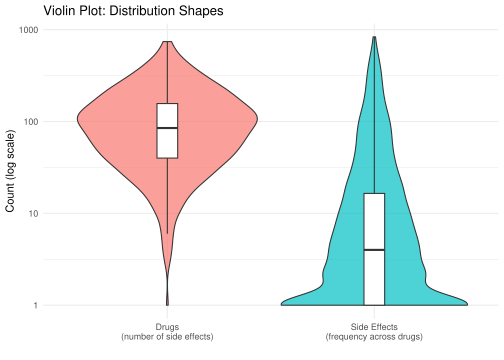

Rows: 109210 Columns: 16
── Column specification ────────────────────────────────────────────────────────
Delimiter: "\t"
chr (9): drugbank_id, common_name, drug_groups, smiles, formula, uniprot_nam...
dbl (6): molecular_weight, hbd, hba, clog_p, freq_lower, freq_upper
lgl (1): lipinski
ℹ Use `spec()` to retrieve the full column specification for this data.
ℹ Specify the column types or set `show_col_types = FALSE` to quiet this message.
# Count the most common side effectscommon_side_effects <- df |>count(side_effect_PT, sort =TRUE)# Which drugs has the most reported side effectstop_drugs_by_toxicity <- df |>count(common_name, sort =TRUE)# View resultshead(df)
A quick check determines that the average side effect is listed 28.5 times but the median side effect is reported 4 times, meaning side effects are very top heavy. We also see that we have 3831 total different listed side effects. This means most side effects are quite rare and few side effects are very common.
We see a similar trend in the distribution of how many side effects are associated with each drug.
# Side effect frequency side_effect_counts <- df |>group_by(side_effect_PT) |>summarise(count =n(), .groups ="drop")# Drug side effect countdrug_side_effect_counts <- df |>group_by(common_name) |>summarise(count =n(), .groups ="drop")# Combine for plottingcombined_data <-bind_rows( side_effect_counts |>mutate(category ="Side Effects\n(frequency across drugs)"), drug_side_effect_counts |>mutate(category ="Drugs\n(number of side effects)"))# Violin plotviolin_plot <-ggplot(combined_data, aes(x = category, y = count, fill = category)) +geom_violin(alpha =0.7) +geom_boxplot(width =0.1, fill ="white", outlier.shape =NA) +scale_y_log10() +labs(title ="Violin Plot: Distribution Shapes",x ="",y ="Count (log scale)" ) +theme_minimal() +theme(legend.position ="none")ggsave(paste0(results_path,"Description_violin_plot.png"), plot =last_plot(), width =8, height =6, dpi =300)print(violin_plot)

We see a distribution that is centered about the average value for the number of side effects per drug, while the side effects distribution is much more skewed. Drugs have a lot of side effects, but side effects are often specific although with a small amount of side effects being experienced in a large amount of drugs, side effects such as nausea, headache, stomach ache etc. Drugs with many side effects include pregabalin and testosterone.